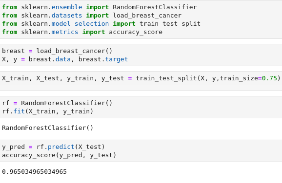

This page is aimed to help people who want to start working on ML studies
|
Preparing a dataset: |
First we pick a simple dataset; we import it; and then we extract our features (X) and our target (y) from sklearn.datasets import load_iris
iris = load_iris()
X, y = iris.data, iris.target
|
|
Lets split our data for training and testing: |
usually splitting ratio is between 50%-80%, in this case we will use a ratio of 75% from sklearn.model_selection import train_test_split
X_train, y_train, X_test, y_test = train_test_split(X, y, 0.75)
|
|
Creating a model instance and training: |
Random Forest is a model that uses many decision trees, can be used for both regression and classification from sklearn.ensemble import RandomForestClassifier
rf = RandomForestClassifier()
rf.fit(X_train, y_train)
|
|
Lets evaluate our model: |
from sklearn.metrics import accuracy_score y_pred = rf.predict(X_test)
accuracy_score(y_pred, y_test)
|
|
Demonstration: |
 |